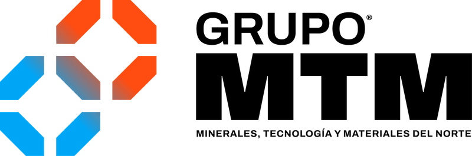
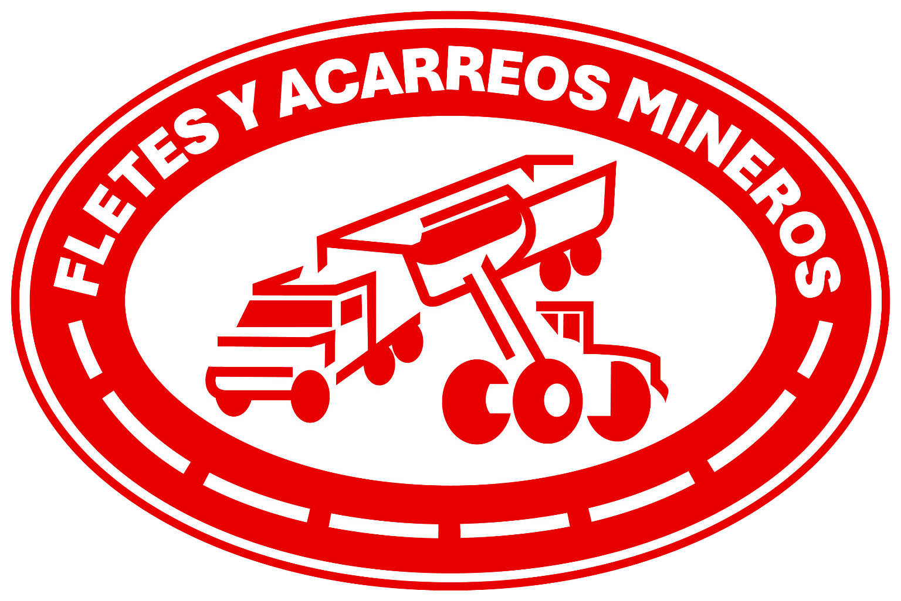
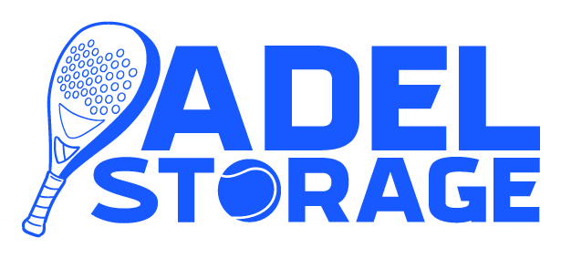
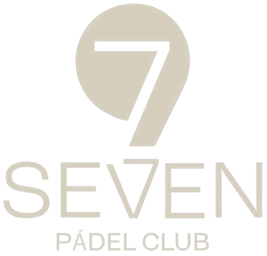
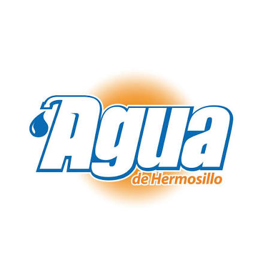

Combinamos desarrollo de software a la medida, inteligencia de negocio, automatización e inteligencia artificial para transformar la operación de una empresa en Hermosillo, Sonora y México a partir de sus procesos, datos y conocimiento.
Durante años, la tecnología empresarial se enfocó en capturar información y consultar reportes. Hoy puede hacer mucho más.
Software a la medida, inteligencia de negocio e inteligencia artificial, trabajando sobre la misma operación — para empresas en Hermosillo, Sonora y México.
Construimos la infraestructura digital del negocio: sistemas propios que centralizan procesos, sustituyen operaciones manuales y conectan áreas.
No vendemos un software estándar al que el cliente tenga que adaptarse. Construimos alrededor de cómo funciona realmente su empresa.
Convertimos la información de la operación en inteligencia: qué está ocurriendo, por qué, y dónde existen riesgos u oportunidades.
No buscamos generar más dashboards, sino convertir la información en criterio para dirigir el negocio.
Construimos agentes y sistemas de IA que usan la información real de la empresa y se conectan con sus procesos y herramientas.
La inteligencia artificial no se plantea como una interfaz aislada, sino como una capa inteligente capaz de analizar, anticipar y actuar dentro de la operación.
La inteligencia artificial solo genera valor cuando opera sobre procesos y datos bien estructurados.
Procesos, información y reglas del negocio estructurados en un mismo entorno.
Sistemas y fuentes integrados para trabajar sobre información consistente y actualizada.
Analítica e inteligencia artificial construidas sobre el contexto real de la empresa, no sobre información aislada.
Automatizaciones y agentes que actúan dentro de límites, permisos y procesos definidos.
Conectado a los datos, sistemas y procesos de la empresa, un agente puede observar, analizar, anticipar y ejecutar dentro de la operación.
Detecta desviaciones antes de que escalen, sin que nadie tenga que revisar.
Márgenes, costos, rentabilidad y movimientos fuera de comportamiento.
Clientes, productos y segmentos con potencial de crecimiento o recuperación.
Faltantes, sobreinventario y necesidades de compra antes de que sean urgentes.
Cruza uso, historial y comportamiento del equipo para adelantarse a una parada.
Acciones dentro de la operación sin depender de tareas manuales.
Software a la medida, inteligencia de negocio e implementación de IA para las industrias que mueven a Sonora — y para empresas en todo México.
Control de flota y viajes, costo por tonelada, mantenimiento de maquinaria y reportes al cliente minero.
Producción y distribución, padrón de usuarios, facturación, pérdidas de red y desempeño operativo.
Trazabilidad de campo a empaque, costo por hectárea, calidad y control de exportación.
Rentabilidad por ruta y unidad, flota, combustible, costos y mantenimiento preventivo.
Control operativo, producción, trazabilidad, merma y automatización de planta.
Producción, inventario en frío, sanidad, costos y trazabilidad para exportación.
Avance de obra, maquinaria, materiales, costos por frente y control de contratistas.
Abastecimiento, punto de reorden, punto de venta, compras y análisis de inventario.
Agentes de IA, atención, ventas, reservaciones y automatización comercial.





Nuestra base está en Hermosillo, Sonora. Desde ahí construimos e implementamos sistemas para empresas en Hermosillo, Obregón, Navojoa y cualquier punto del país.
Todo comienza con un buen diagnóstico.